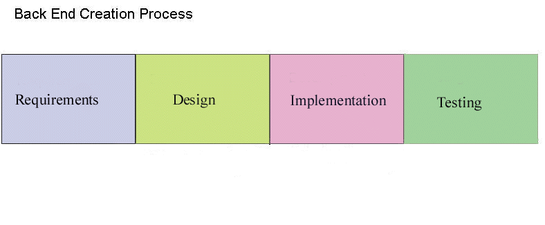
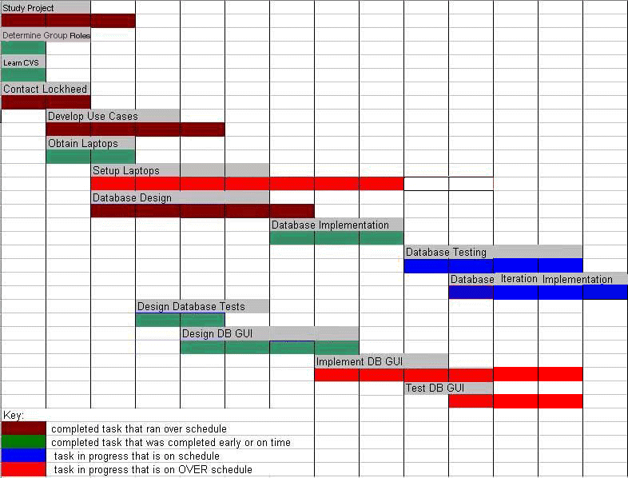

| Short Term Goals | Completion Date |
| Create Use Cases | Week 5 |
| Fix ER Diagram | Week 4 |
| Finalize Design of Database | Week 7 |
| Implement Database | Week 9 |
| Design Database GUI | Week 8 |
| Short Term Goals | Estimated Completion Date |
| Setup Laptops | Week 13 |
| Test Database | Week 13 |
| Database Iteration Implementation | Week 14 |
| Database GUI Implementation | Week 14 |
| Test Database GUI | Week 14 |
Setup Laptops – Lockheed has provided us with two laptops this semester. The server laptop is being used for development and hosts our data base and web server. Currently Apache is being used as our web server in combination with Tomcat to create sample Java Servlet Pages which will be used to test the data base. The client machine, which is unable to connect to the LAN at this moment, will be used in our demonstration to our client.
Test Database – To allow for a more extensive testing of our Data Base which can be done by any of our group members or our clients online, we have created a simple UI to test the use cases. This environment will be used to run sample SQL queries which will in turn be used in our DB GUI.
Database Iteration Implementation - While implementing the database, we will come accross areas where the database will need to be revised. The design will therefore be altered and the implementation process continued.
Database GUI Implementation - Implement a GUI (JSP Pages) to access the database. The GUI will allow for devices to be added, removed, and viewed easily, as well as monitoring information about all the devices in a system or zone. Further implementation will be needed next semester.
Test Database GUI - We will test the GUI that we complete at the end of the semester. Further testing will be needed next semester as the GUI continues to be implemented.
| Short Term Goals | Estimated Completion Date |
| Design simple UI to test use cases with database | Week 5 |
| Implement simple UI to test use cases with database | Week 5 |
| Demonstration of DB (Prototype) | Week 13 |
Create DB UI to test Back End of Product – A simple UI will be needed which will perform queries on the Data Base.
Demonstration of Back End of Product – We plan to perform a demonstration of the back end of this product to our client at the end of the semester. This demonstration will include the desired features described above in the simple UI.
Originally, we had planned to create an extensive User Interface which enables devices to be added, removed, and viewed easily, as well as monitoring information about all the devices in a system or zone. Instead, we are creating an interface to meet these needs but that will need further development on in order to meet all of the clients requirements and GUI desires. We will test the UI we complete.
REASONS
The previous semester’s group created a Data Base, written in Microsoft Access, which originally was thought to be complete. Our Short Term Plan at the beginning of the semester reflected this, as we planned to work more on the front end User Interface and testing of the back and front ends together. After several meetings with our clients, it was decided that the Data Base from last semester did not address Lockheed’s problem sufficiently, and therefore, we decided to create a new Data Base. This major new goal has taken approximately 5 weeks. This amount of time was necessary in order to completely understand the details of Lockheed’s extensive system of devices and their behaviors, as well as how they interact with each other in the forms of zones and systems. We feel that we now have a fairly complete understanding of Lockheed’s problems and what they expect from this system, and can pass this on to future groups through this semester’s documentation and as well as in meetings next semester. Communication with our clients has also slowed the data base creation process, as it is difficult to find times when both our group and our clients can meet. Meetings are typically scheduled every Friday at 11:00 am in the form of a conference call to our clients in Moorsetown, New Jersey. We still plan to have a simple User Interface that will be used to test the completeness of the Data Base we have created this semester.
WEEK 11
· Testing Requirements Complete
· JSP Creation - sample screenshots
· Put e-mails from clients up on webpage
WEEK 12
· Testing DB through rootnode
· Reviews Document - Peer Evaluations
· JSP Creation: Add/Edit Devices, Systems,
Zones
WEEK 13
· JSP Creation: Add/Edit Devices, Systems,
Zones
· Demonstration to Lockheed of Back end DB
· Finish testing DB through rootnode
· Finish laptop setup
WEEK 14
· Finish testing JSP UI
· Finish JSP Creation: Add/Edit Devices,
Systems, Zones
· Database Interation Implementation
· Create user manual for DB with DB UI
WEEK 15
· Final Documents Due - EOS
· Final Presentation Preparation
WEEK 16
· Final Presentation Performance

This semester we completed most of the diagram above. We started
out by modifying the requirements
from last semester to meet our clients' needs. We then proceeded
into the design and the
implementation phases, first for the database
and then for the user
interface merging. After creating
the database and user interface, we began testing
both. Since the database implementation was
finished before the front-end, testing was completed on the back-end.
Next semester will finish testing
the user interface.
Weeks
1
2 3
4 5
6 7
8 9
10 11
12 13
14

Hour Breakdown
|
|
|
|
| Study Project | 30 | 45 |
| Determine Group Roles | 6 | 3 |
| Learn CVS | 12 | 12 |
| Contact Lockheed | 6 | 6 |
| Develop Use Cases | 24 | 32 |
| Obtain Laptops | 5 | 5 |
| Setup Laptops | 40 | 55 |
| Database Design | 46 | 65 |
| Database Implementation | 54 | 40 |
| Database Testing | 16 | 16 |
| Database Iteration Implementation | 72 | 72 |
| Design Database Tests | 21 | 14 |
| Design DB GUI | 46 | 25 |
| Implement DB GUI
- SQL Writer - Database Connection - JSP Pages |
91 |
30 30 100 |
| Test DB GUI | 8 | 2 |
| Totals | 477 | 552 |